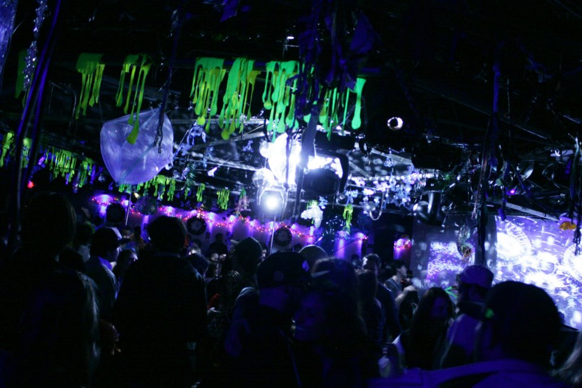
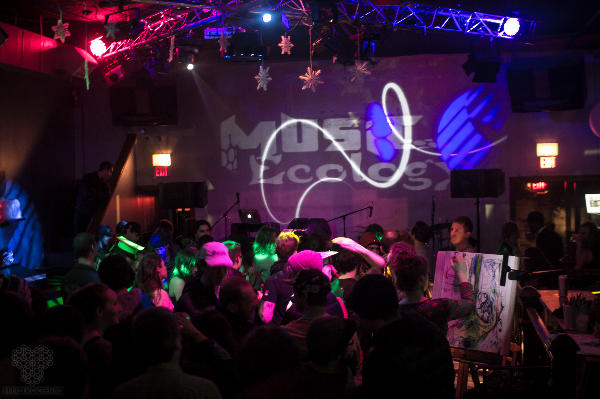

Music Ecology was originally formed as an electronic music event production crew in the summer of 2009. We started as a fortnightly Wednesday night residency in the downstairs lounge of Wonder Bar but the event quickly gained enough popularity to become a weekly Tuesday night party in the bigger upstairs room. Even though the night was centered around electronic music, the intent behind this project was to create a strong sense of community within the Boston scene. We tried to feature every possible genre of electronic music from chiptune and IDM to house and techno to bass music and jamtronica. We invited local artists and craftsmen to participate in the events as well to build a bridge between the music and art scenes thus allowing artists to make connections for future collaborative projects. We have exposed Boston to a number of international and national talent; however, the focus of the night was always on local underground music. To this day, nothing makes us more proud than to hear an artist say “My first public gig ever was with Music Ecology”.
As we gained more and more understanding of the scene and experience in event production, we tried our hands at side projects as well. Visual Enlightenment was a monthly event with the focus shifted towards art vs music. It was a collaborative showcase between 7-12 local artists displaying their work at Wonder Bar. Artists were given an opportunity to leave their work on display for a month after the opening party. This event was eventually taken over by Allston Art Share and is curated by our friend Mike Shick.

In the winter of 2011, we embarked on yet another endeavor and started a collaborative project with 2 other local promoters (Michael DiCarlo from Sin-O-Matic and James Cuddier from Factory) - a monthly party called Genesis. Genesis was held at one of Boston’s finest electronic music venues - Machine. This project took our event production efforts to a whole new level. Each night incorporated music, mapped video projection, elaborate deco, go go dancers, body painting, and art.
We tried our hands at “one offs” at other Boston leading venues as well and participated in co-promotion projects with other local crews. We’ve had showcases as part of the local music art and technology festival - Together Boston. We somehow managed to do all this while maintaining full-time day jobs and running our individual music projects. If we had to answer how we did it, we would say that we did it with the help of our community. Music Ecology has ended up being a gathering of individuals who are tied together with one goal - building an environment centered around creativity, growth, and a sense of fellowship and camaraderie. It’s an amazing feeling to have people contribute their time, effort, and expertise because they believe in your vision. We feel a great sense of accomplishment because this is exactly what we set out to do at our very first crew meeting back in the summer of ‘09. 
After almost five years of running a weekly residency at Wonder Bar, we felt like it was time for a bit of a change. We have moved on from the idea of a regular residency to focusing our attention on special events. We are also going to give this blog a try to see where this takes us. This is a completely uncharted territory for us and we are super-excited to see how it goes.
Subscribe to our Newsletter
Connect